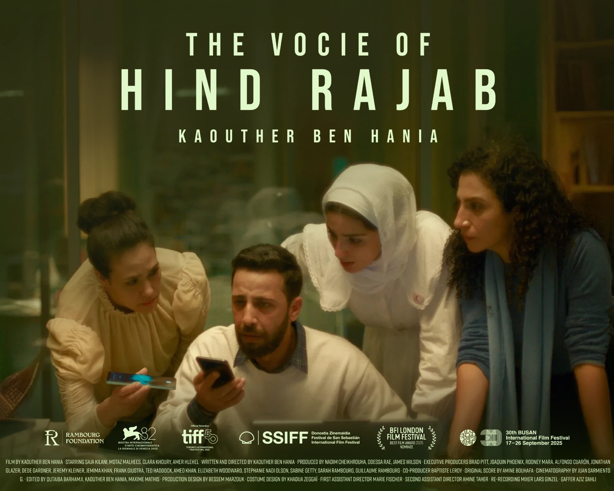

About us
We back the people who shape open, creative societies


The Rambourg Foundation was established in London in February 2011 by Guillaume Rambourg, registered with the Charity Commission for England and Wales. It works internationally under its president, Sarah Rambourg, across culture, art, sport, education and human rights.
 Our founderGuillaume Rambourg
Our founderGuillaume Rambourg
 Our presidentSarah Rambourg
Our presidentSarah Rambourg
Building for today, investing in tomorrow
01Culture as a public good
We believe art, film and heritage belong to everyone, and we work to put them within reach.
02Talent, wherever it is
Scholarships, residencies and open calls find and back people who would otherwise be overlooked.
03The freedom to speak
We stand with artists and citizens whose freedom of expression is at risk.
04Partnership over charity
We work with institutions such as Delfina Foundation, Madad Art Foundation and Christie's to make every pound go further.
Our story
ScrollFounded in London
Guillaume Rambourg establishes the foundation with the Charity Commission for England and Wales (no. 1140347), to sponsor initiatives and structure projects.
A first decade
Programmes across arts, culture, education, scholarships, entrepreneurship, craft and sport — from restoring a palace collection to building a mountain cultural centre.
L'Éveil d'une Nation
The Palais Ksar Saïd opens to the public for the first time, with 300 restored works on the dawn of modern Tunisia. The exhibition
A new chapter
The foundation refocuses its programmes on international partnerships in art, film and human rights.
New leadership
Sarah Rambourg becomes president.
On the world stage
Partner of Christie's exhibition MARWAN: A Soul in Exile in London; The Voice of Hind Rajab, executive produced by Guillaume and Sarah Rambourg, wins the Silver Lion in Venice; an open call for Syrian artists with Delfina Foundation.
Voices that travel
The Voice of Hind Rajab is nominated for an Oscar and a Golden Globe and screened on Capitol Hill; Ranim Al Halaky completes her residency at Delfina Foundation.

In her words
“Justice is not a spectator sport. It is a team effort.”Sarah Rambourg, President